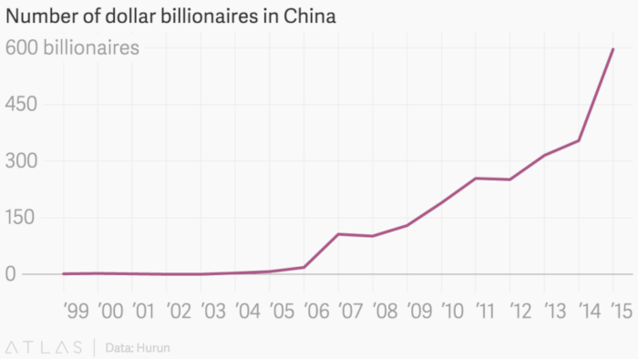
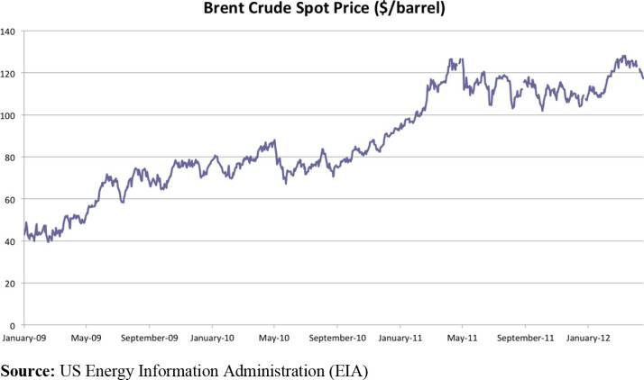
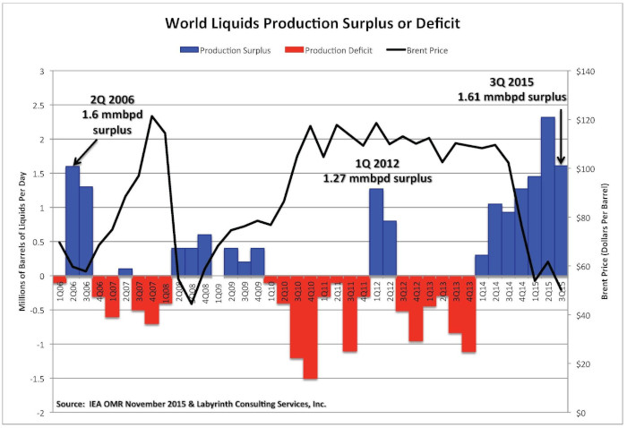
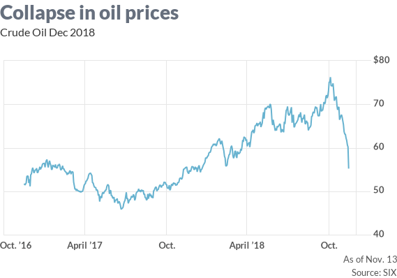

How Oil Trickled Through the Decade
It all started with the oil.
On April 20, 2010, the Deepwater Horizon, an oil drilling rig owned by British Petroleum in the Gulf of Mexico, exploded. It was the largest marine oil spill in the history of the petroleum industry; an estimated 4.9 million barrels of crude oil in over 87 days was supposed to have been spilled. At the time, 126 crew members were on board and eleven workers were never found despite multiple US Coast Guard search operations. The Deepwater Horizon sank two days later. Official reports say the oil spill has likely harmed or killed approximately 82,000 birds of 102 species, and approximately 6,165 sea turtles, and up to 25,900 marine mammals. The entire rescue, response and cleanup operations took 4 months, 4 weeks and 2 days. British Petroleum paid more than $20 billion in fines.
The Obama Effect
“The consequences of our inaction are now in plain sight. Countries like China are investing in clean energy jobs and industries that should be here in America. Each day, we send nearly $1 billion of our wealth to foreign countries for their oil. We cannot consign our children to this future. The tragedy unfolding on our coast is the most painful and powerful reminder yet. The time to embrace a clean energy future is now. “– Barack Obama, June 2010.
The 44th President of the United States had just been in office for over a year and yet he had already done the unimaginable. Pulling the economy out of The Great Recession, Obama became a symbol of hope to the post-crash America. Hope. The most important word on his campaign trail; something he hoped to carry on with him into the White House.
But on this June morning, addressing the Mississippi crowd, he focused on two things: clean energy and China.
Barack Obama’s struggle towards clean energy has been tough and why shouldn’t it be? When you have an unresponsive Congress who won’t budge because of a Republican majority; when the Congress won’t lend an ear to clean energy because their donors are rich oil magnates; when nobody in your government seems to be rooting for you, what do you do? You look outside. It was at the 2009 United Nations Climate Change Conference at Copenhagen, where he championed the cause of alternative sources of energy for a cleaner environment before member nations of the UNFCCC. It was called the COP15 but they called it ‘Hopenhagen’. Unfortunately, things were ‘taken note of’ and not ‘adopted’. Things would remain the same in coming years. Obama had the intentions, but people questioned his execution.
Chinese Production or Possibilities?
Meanwhile, China’s economy was on the rise. Just look at the number of billionaires shoot up post-2000:

At the turn of the decade, China had a GDP growth rate bordering on 10% with investors high about the potential that the Chinese market had. Even the US markets were looking at the Far East manufacturing powerhouse as a likely rival in the coming future, with experts predicting their economic output to be at par by 2018. China was not only becoming a force to be reckoned with but also a major consumer of oil which was expected to lead a huge boost in global oil demand. But predictions do not always come true, do they?
Spring in the Arab Desert
In the early years of the decade, just as the world was reeling from the financial disaster that was, the markets were shaken by another catastrophic series of events. A revolution broke out in Tunisia, powered majorly by the newfound abilities of social media. All of a sudden, one country after another started falling to popular uprisings, social violence and major protests with regimes being overthrown in at least five other countries in the Middle East and North Africa region. This time, again, it was the oil markets which faced the brunt of the problem.
Energy and Middle East scholar at Oxford, Justin Dargin put it this way:
“Global investors speculated that in the beginning months of the Arab Spring, there could be oil production disruption in the oil-producing Gulf countries.
There was the fear that perhaps several important sea-lanes and canals, such as the Strait of Hormuz or the Suez Canal, could be blocked. Furthermore, a bit later on during the Arab Spring, terrorism fears grew and it was thought that the regional power vacuum could encourage militant groups to launch attacks on MENA energy infrastructure.”
The ‘fear premium’(price rise due to speculations about significant events that will negatively affect markets) caused a surge that the world was definitely not prepared for.

Sheikh Vs. Shale
By 2015, Crude oil prices ended below $40 per barrel, the lowest level since 2009. Prices were above $100 just a year ago, only to be met by an inconceivable bust to the oil markets. Lower crude oil prices in 2015 reflected the sustained excess of crude oil supply over global demand. There had been a major supply gut which caused global crude oil inventories to increase steadily through the year. With China facing a gradual slowdown in its economy, the hopes for higher crude oil demand looked slim. What had happened?
The most surprising fact of all was the conflict in the Middle East, including the Syrian Crisis, had little to no effect on the oil markets. If these forces did not affect the markets, then who did? OPEC? Saudi Arabia?

Yes, and No. The Saudis were partially to blame. But they were completely responsible for one of the greatest tricks pulled in economic history. Since 2008, the US had been steadily increasing their production of ‘shale’ oil, obtained from organic-rich sedimentary rock found primarily in Texas and North Dakota. By 2014, they had shaved off 50% of their imports from OPEC while expanding production by a hefty 70 percent. This boost to supply caused oil prices to drop globally and at a frenetic pace, unchecked by the OPEC disagreeing on whether to lower their production. So Saudi Arabia held out, their Oil Minister saying he doesn’t care even if prices fell to $20 a barrel.
Soon the outwitted Americans realised that the oil prices were falling far too low to maintain production at a sustainable (let alone profitable) pace. Even at $60-$80 a barrel, shale oil was going for a loss, and a toss. The OPEC had won again, this time, thanks to the clever Saudi Arabians.
Volatile shifts and the Trump Era
The slump had caused economic contractions in oil-producing countries like Brazil and Venezuela, whose economy shrunk by 16.5%. Even Saudi Arabia took on austerity measures, dropping capital spending by a whopping 71 percent.
The prayers were finally heard in 2016. The OPEC cut its production in November, which hadn’t happened since the global crisis of ‘08. The cut, which was joined by the likes of Russia, helped push oil costs sharply higher. Crude oil jumped at least five per cent when the OPEC decided to limit production to thirty-three million barrels daily.
As things seem to be moving towards a period of stability by the end of the year, Donald Trump wins the elections and is ushered into the White House, sailing on a campaign of lambasting the Obama administration and in particular the Iran Deal (JCPOA):
“John Kerry can’t get over the fact that he had his chance and blew it!” Trump wrote. “Stay away from negotiations John, you are hurting your country!”
Meanwhile, Venezuela whose economy was (and still is) reeling from Nicholas Maduro’s autocracy, had their production declining so much that they could no longer satisfy their domestic needs, let alone foreign customers. Then they went out and pegged their failing currency to their almost failing oil market.
But back in the global oil markets, things were looking better. Prices were rising steadily for the latter half of 2017 and most of 2018, which prompted Trump to tweet:
“Oil prices are too high, OPEC is at it again. Not good!”—US President Donald Trump in June 2018 This prompted the 23rd June meeting of OPEC ministers in Vienna where they decided to boost production by 1 million barrels/day. Unfortunately, it was soon overshadowed by Trump’s announcement of US withdrawal from the JCPOA.
This action, as the market expected, would result in a greater loss of supply than the initial estimates of 500,000 bl/d. As a result, the market began preparing for the worst(even overestimating shortages) and sources reveal that OPEC had started to hike its production way before the June 2018 meeting. Contrary to economic understanding, when November 4th approached, the day the sanctions on Iran would be enforced again, the price of crude oil dropped like a rock.Factor in the growing fears of an oncoming recession in China (the world’s largest importer of oil) and the ensuing fall in demand, and we have another spectacular swing again.

The New Year may bring new sentiments but much remains to be seen. Only Oil can affect geopolitics so greatly. Or is it the other way around? At least for the past century, one thing’s for sure.
It all started with the oil.
Subscribe to The Pangean
Get the latest posts delivered right to your inbox